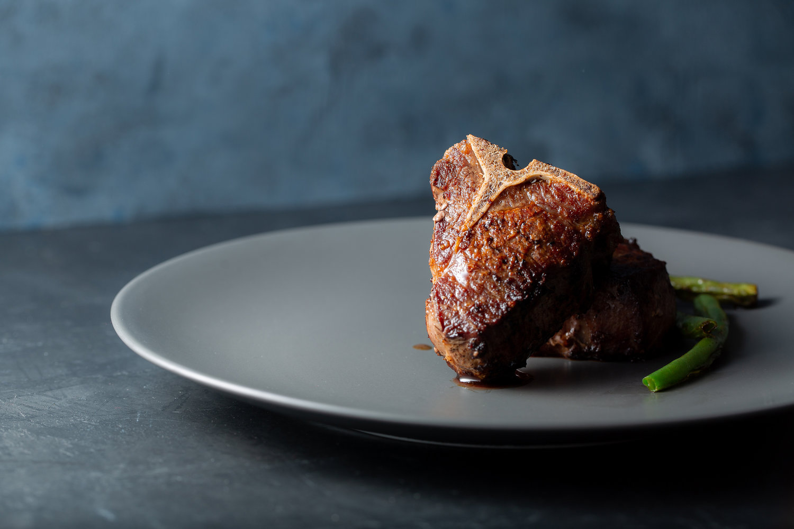

Lamb chops
Home

Costco Halal Lamb From New Zealand
Ingredients:
This is a pretty easy recipe, so I'm just going to get right into it. Because the lamb chops are fairly thick, you'll have to sear them in a cast-iron pan on the stove and then pop them in the oven. Two step cooking!
- Bring your lamb chops to room temperature.
- Preheat your oven to 350°F.
- Sprinkle all sides (top, bottom, sides, just not the bone-side) with Sea Salt
- Heat up a couple tablespoons of canola oil on an 8-10” cast iron pan.
- When the oil is glistening, it's go time.
- Repeat this searing process for each side of meat—top, bottom, left, and right.
- Serve! With some crispy greens like, I don't know, brussels sprouts!